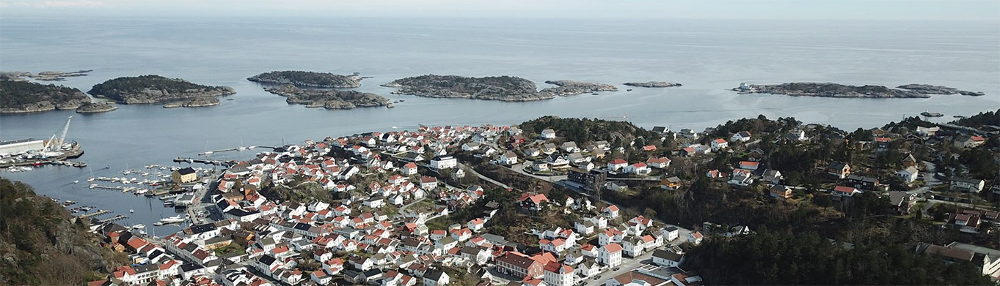
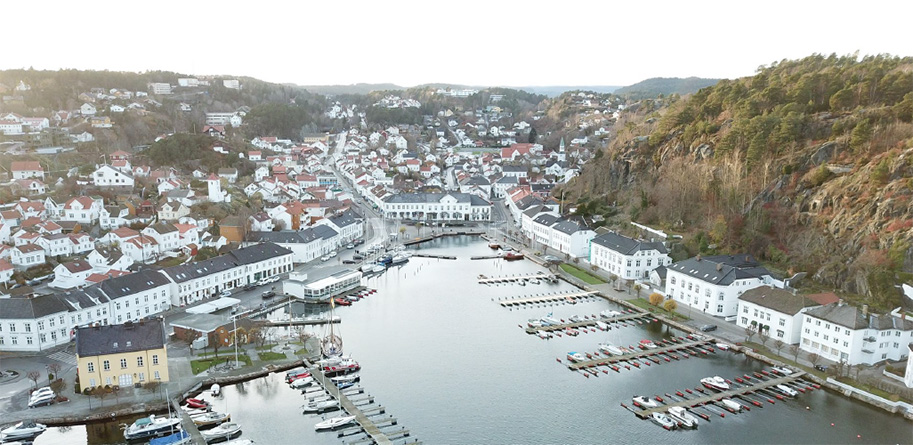
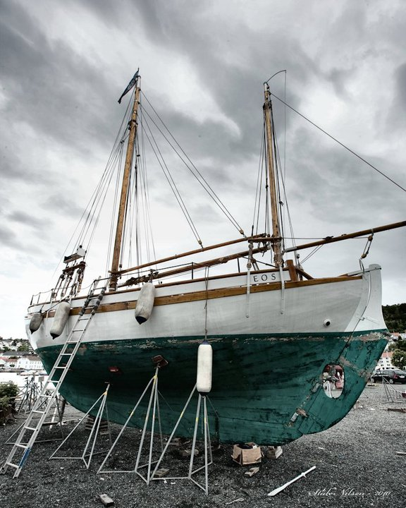

We offer guided, eco-friendly, bicycle tours in Risør, Norway.
"The white pearl of Skagerak" is a beautiful small town located on the south coast of Norway. The litle town holds alot of history and mystery. Join us and we will show you it's secrets ..
The bicycles we provide, are donated from the locals, and 10% of the profit goes to the charity "Ocean Conservancy"